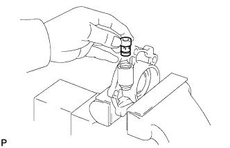
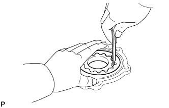
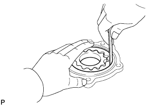

OIL PUMP > INSPECTION |
| 1. INSPECT OIL PUMP RELIEF VALVE |
Coat the relief valve with engine oil.
 |
Check that the relief valve falls smoothly into the valve hole by its own weight.
If the relief valve does not, replace it. If necessary, replace the oil pump cover assembly.
| 2. INSPECT OIL PUMP ROTOR SET |
Install the rotors to the oil pump cover assembly. Check that the rotors revolve smoothly.
 |
Check the tip clearance.
Using a feeler gauge, measure the clearance between the drive and driven rotor tips, as shown in the illustration.
 |
Check the body clearance.
Using a feeler gauge, measure the clearance between the timing chain cover and driven rotor, as shown in the illustration.